Metals are our lens on disease. Starting from metal ions, coordination structures,
and radiometals, we work out disease mechanisms and build delivery platforms for
tissue repair and tools for molecular imaging.
I trained in pharmacy as an undergraduate. My master's research covered the
total synthesis, structural design, and anti-inflammatory evaluation of cyclic
peptides, which gave me end-to-end training from molecular design and synthesis
to biological assessment.
In 2021 I began a Ph.D. in organic chemistry at Nanjing University, studying
interface recognition and functional regulation in protein-protein interactions
and exploring how they can be engineered.
Since July 2025 I have been a Distinguished Associate Research Fellow and
independent PI at the Central Laboratory of The First Affiliated Hospital of
Ningbo University. Built around metal-centered mechanisms and engineering platforms,
the group works on tendon injury, oral disease,
cancer targeting, and PET/CT molecular imaging.
Starting from clinical questions, we study metal ions, coordination structures,
metal interfaces, and radiometals, and turn what we learn into tools for local
delivery, tissue repair, and molecular theranostics.
Our main clinical partners are
orthopedics, stomatology, and nuclear medicine.
McMetal · Mechanism
金属作为机制变量
Metals as mechanistic variables
探究病理性结晶、金属离子稳态与组织微环境如何影响炎症、矿化和组织修复。
How do pathological crystals, metal-ion homeostasis, and the tissue
microenvironment shape inflammation, mineralization, and repair?
MSU晶体、牙结石、动脉粥样硬化等病理性矿化过程
金属组学与金属离子细胞生物学
合作科室：骨科中心
Pathological mineralization, including MSU crystals, dental calculus, and atherosclerosis
Injectable and local delivery platforms built on metal coordination,
metal-phenolic networks, MOFs, and nanozymes, aimed at tendon injury and tissue repair.
水凝胶、3D打印支架、静电纺丝体系
微针、微球等递送缓释系统
合作科室：骨科中心、口腔科
Hydrogels, 3D-printed scaffolds, and electrospun fibers
Microneedle- and microsphere-based sustained delivery systems
Clinical partners: Orthopedics Center, Stomatology
The group is based at the Fangqiao Campus of The First Affiliated Hospital of
Ningbo University, with members from backgrounds including orthopedics,
stomatology, and pharmacy.
课题组负责人Principal Investigator
张壮伟
Zhuangwei Zhang
特聘副研究员，课题组长。负责课题组在金属生命科学、生物医学工程平台与临床转化方向的整体规划。
Distinguished Associate Research Fellow and PI. Sets the group’s direction in metallobiology, biomedical engineering platforms, and clinical translation.
核心临床合作Core clinical collaborators
毛海蛟、肖尊宇、赵梦祥
Haijiao Mao, Zunyu Xiao, Mengxiang Zhao
分别来自骨科中心、核医学科和口腔科，为跟腱病损、PET/CT分子影像和口腔疾病研究提供临床支撑。
Clinicians from orthopedics, nuclear medicine, and stomatology who anchor the group’s work on tendon disease, PET/CT imaging, and oral disease.
Ph.D., School of Biotechnology, Jiangnan University; Assistant Research Fellow at Zhejiang Wanli University. Works with the group on bioinformatics and on microbes linked to pathological crystal deposition.
外部交叉合作Interdisciplinary collaborator
李建新
Jianxin Li
南京大学化学化工学院教授（有机化学），在有机化学、分子设计与交叉转化研究方面开展合作。
Professor of Organic Chemistry, School of Chemistry and Chemical Engineering, Nanjing University. Collaborates on organic chemistry, molecular design, and interdisciplinary translation.
Ph.D., Sichuan University; Research Fellow at the Heilongjiang Institute for Drug Control. Collaborates on drug design, structural biology, computational chemistry, and AI-driven drug discovery (AIDD).
外部交叉合作Interdisciplinary collaborator
李仁杰
Renjie Li
广东双林生物制药有限公司研发中心项目研究员，在生物制药研发与成果转化方面开展合作。
Project Researcher, R&D Center, Guangdong Shuanglin Bio-Pharmacy Co., Ltd. Collaborates on biopharmaceutical R&D and translation.
生物医学工程-水凝胶方向Biomedical engineering: hydrogels
跟腱病损与递送缓释体系
Tendon disease and sustained delivery systems
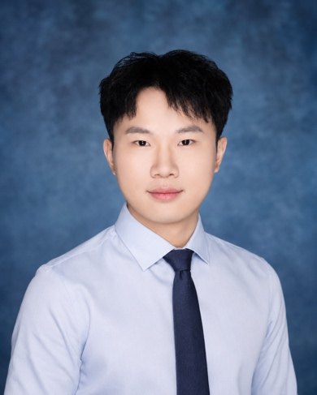
钟梦林Menglin Zhong宁波大学2025级 骨科学专硕Ningbo University, 2025 cohort Professional master's candidate in Orthopedics生物压电、3D打印Biopiezoelectricity and 3D printing
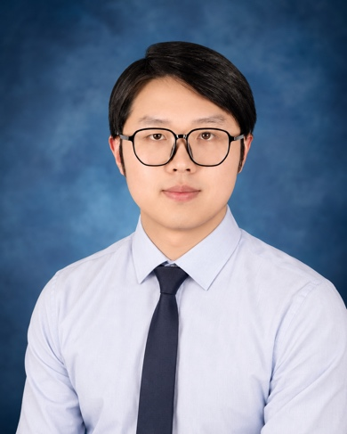
王轲瑜Keyu Wang温州医科大学2025级 骨科学专硕Wenzhou Medical University, 2025 cohort Professional master's candidate in Orthopedics微球、气体疗法Microspheres and gas therapy
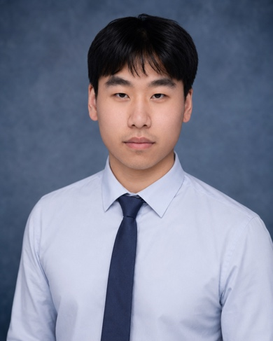
李家骏Jiajun Li温州医科大学2025级 骨科学专硕Wenzhou Medical University, 2025 cohort Professional master's candidate in Orthopedics微针、金属-药物网络Microneedles and metal-drug networks
邵一丁Yiding Shao宁波大学2024级 临床医学学硕Ningbo University, 2024 cohort Research master's candidate in Clinical Medicine仿生腱周膜水凝胶Biomimetic peritendinous membrane hydrogels
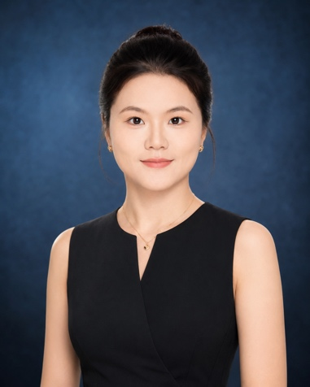
杨雯Wen Yang宁波大学2025级 临床医学学硕Ningbo University, 2025 cohort Research master's candidate in Clinical Medicine细胞凝胶Cell gels
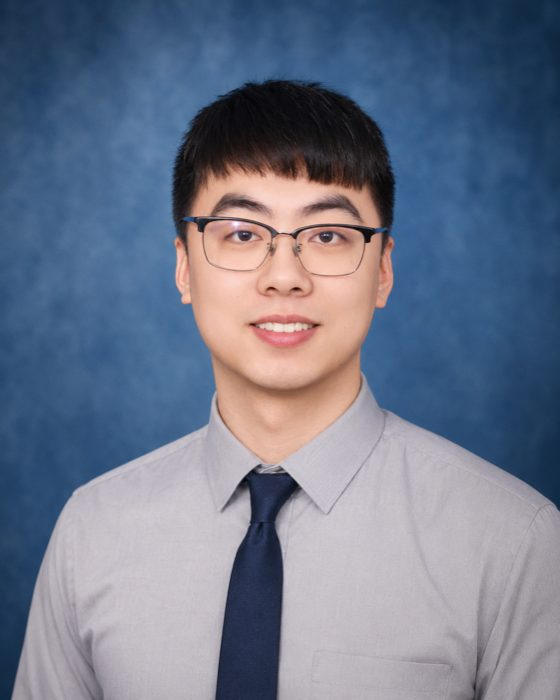
杨沅Yuan Yang宁波大学2026级 骨科学专硕Ningbo University, 2026 cohort Professional master's candidate in Orthopedics天然产物水凝胶Natural product hydrogels
林子皓Zihao Lin宁波大学2026级 临床医学学博Ningbo University, 2026 cohort Ph.D. candidate in Clinical Medicine肌肉缺损与骨再生Muscle defects and bone regeneration
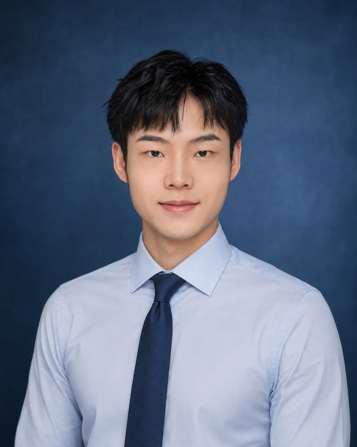
任天一Tianyi Ren宁波大学2025级 机械专硕Ningbo University, 2025 cohort Professional master's candidate in Mechanical Engineering摩擦发电Triboelectric power generation
生物医学工程-纳米酶方向Biomedical engineering: nanozymes
纳米酶与Bio-MOF
Nanozymes and Bio-MOFs
张壮伟Zhuangwei Zhang特聘副研究员，课题组长Distinguished Associate Research Fellow, PIMOF纳米酶与痛风性关节炎MOF nanozymes for gouty arthritis
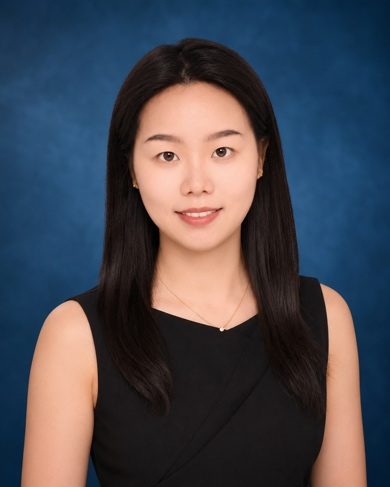
程俊格Junge Cheng丽水学院2025级 口腔科专硕Lishui University, 2025 cohort Professional master's candidate in Stomatology高熵纳米酶与舌鳞状细胞癌High-entropy nanozymes and tongue squamous cell carcinoma
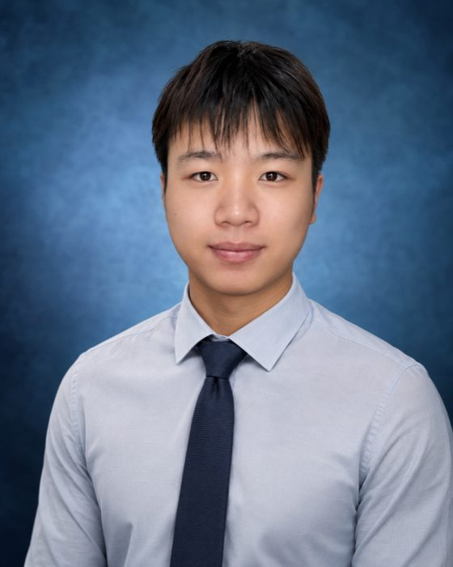
黄佳琦Jiaqi Huang宁波大学2024级 口腔医学本科生Ningbo University, 2024 cohort Undergraduate in Stomatology金属-药物网络与口腔鳞状细胞癌Metal-drug networks for oral squamous cell carcinoma
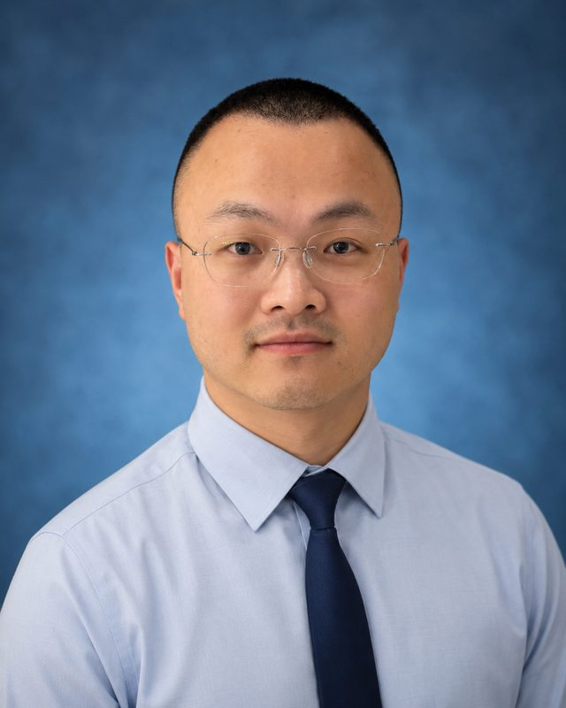
姚思恩Sien Yao宁大一院静配中心 药师PIVAS, The First Affiliated Hospital of Ningbo University Pharmacist生物MOF与口腔疾病Bio-MOFs for oral disease
病理机制解析Pathological mechanism analysis
多组学分析与疗法创新
Multi-omics analysis and therapeutic innovation
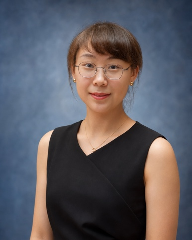
姜烁琦Shuoqi Jiang浙江万里学院 助理研究员Zhejiang Wanli University Assistant Research Fellow酶替代疗法与病理性结晶沉积Enzyme replacement therapy for pathological crystal deposition
艾林Lin Ai温州医科大学2026级 骨科学学硕Wenzhou Medical University, 2026 cohort Research master's candidate in Orthopedics生物钟疗法Circadian clock therapy
李家骏Jiajun Li温州医科大学2025级 骨科学专硕Wenzhou Medical University, 2025 cohort Professional master's candidate in Orthopedics金属代谢组学Metallometabolomics
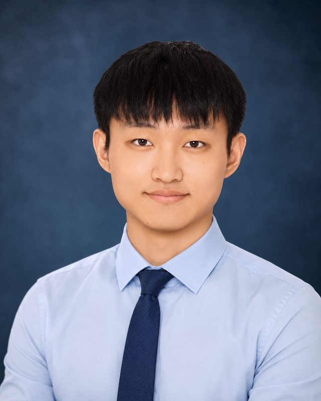
霍亭洋Tingyang Huo温州医科大学2026级 骨科学专硕Wenzhou Medical University, 2026 cohort Professional master's candidate in Orthopedics金属螯合疗法Metal chelation therapy
分子设计Molecular design
多肽-蛋白质从头设计
De novo peptide-protein design
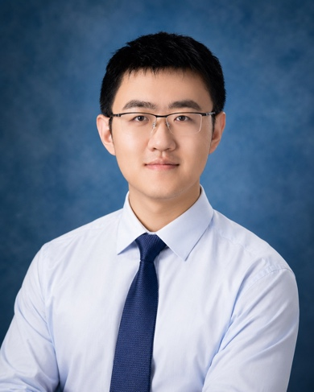
段劭Shao Duan哈尔滨医科大学2023级 骨科学学博Harbin Medical University, 2023 cohort Ph.D. candidate in Orthopedics从头设计与免疫PET成像De novo design and immuno-PET imaging
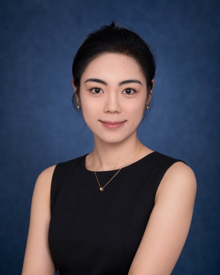
章若梦Ruomeng Zhang宁波大学2025级 临床医学学硕Ningbo University, 2025 cohort Research master's candidate in Clinical Medicine从头设计与免疫PET成像De novo design and immuno-PET imaging
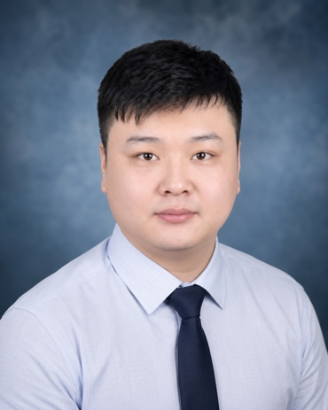
赵耀Yao Zhao哈尔滨医科大学2024级 骨科学专硕Harbin Medical University, 2024 cohort Professional master's candidate in Orthopedics从头设计与免疫PET成像De novo design and immuno-PET imaging
实习成员Intern members
实习成员
Intern members
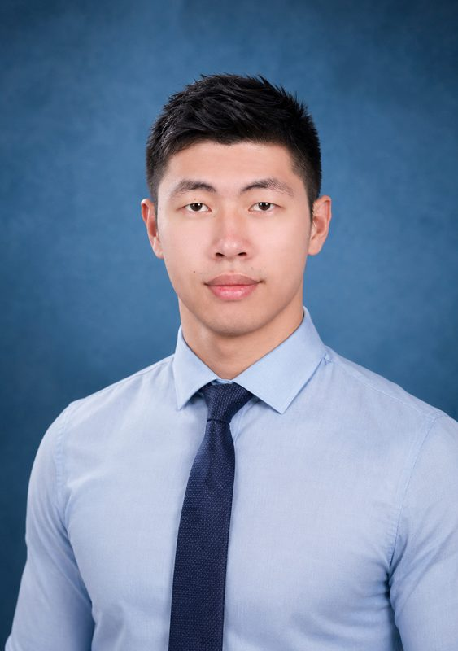
陶昕昊Xinhao Tao宁波大学2025级临床医学（拔尖人才创新班）2025 Clinical Medicine (Top-notch Innovative Talent Program), Ningbo University研究方向待定Topic to be determined
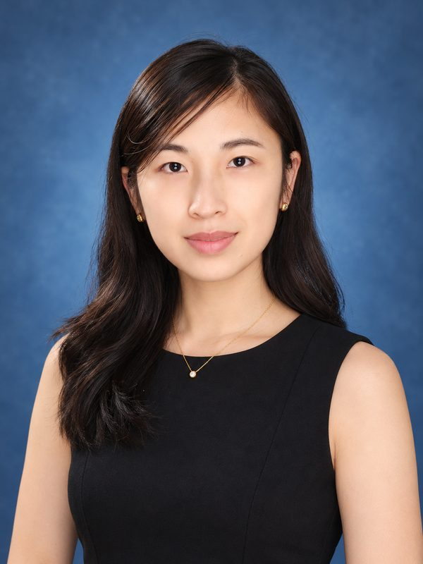
吴英Ying Wu宁波大学2026级临床医学学硕2026 M.Med. candidate in Clinical Medicine, Ningbo University研究方向待定Topic to be determined
共同第一作者 Qin S., Wang Q., Zhang Z., Gu J., He G., Zeng F., Chen R., He B., Wang Y., Wang M., Song Y. Metabolic Hijacking by Engineered Probiotics Reprograms Tumor Metabolism and Immune Microenvironment for Self-Reinforcing Photodynamic Immunotherapy. Journal of the American Chemical Society, 2025. DOI: 10.1021/jacs.5c10242.
加入宁波大学之前
通讯作者高被引 Wang H., Xiang L., Zhang Z., Li G., Li P., Chen W., Yu F., Lin X., Lin S. Elucidating the interaction mechanism of rutin with beta-casein and beta-lactoglobulin: A comprehensive analysis using multi-spectroscopy, molecular docking, and molecular dynamic simulations. Food Chemistry, 2025. DOI: 10.1016/j.foodchem.2025.143411.
共同第一作者 Jiang S., Zhang Z., Gu Q., Li J., Yu X. Rational design to enhance the catalytic activity of acetylcholinesterase and mitigate trichlorfon toxicity in vitro. International Journal of Biological Macromolecules, 2024. DOI: 10.1016/j.ijbiomac.2024.138001.
第一作者Zhang Z., You Y., Jiang S., Tang Y., Jia Z., Li J. In silico screening of dyes for enhanced silk coloring using the feeding approach. Sustainable Chemistry and Pharmacy, 2024. DOI: 10.1016/j.scp.2024.101804.
共同第一作者 Li H., Zhang Z., Chen J., Sun M., Tang H. Effect of Cu2+ on the binding of catechins to zein through multi-spectral and in silico analyses. Food Chemistry, 2024. DOI: 10.1016/j.foodchem.2024.141547.
第一作者Zhang Z., Jiang S., Li Y., Xie D., Li J. Residue profiles of peptides with cholesterol esterase and pancreatic lipase inhibitory activities through virtual screening and sequence analysis. Food Chemistry, 2024. DOI: 10.1016/j.foodchem.2024.140708.
共同第一作者 Jiang S., Zhang Z., Gu Q., Yu X. Semi-rational design for enhancing thermostability of Culex pipiens acetylcholinesterase and sensitivity analysis of acephate. Science of The Total Environment, 2024. DOI: 10.1016/j.scitotenv.2024.173282.
共同第一作者 Chen J., Zhang Z., Li H., Sun M., Tang H. Preparation, structural characterization, and functional attributes of zein-lysozyme-kappa-carrageenan ternary nanocomposites for curcumin encapsulation. International Journal of Biological Macromolecules, 2024. DOI: 10.1016/j.ijbiomac.2024.132264.
共同第一作者 Chen J., Zhang Z., Li R., Li H., Tang H. Investigating the interaction mechanism between gliadin and lysozyme through multispectroscopic analysis and molecular dynamic simulations. Food Research International, 2024. DOI: 10.1016/j.foodres.2024.114081.
第一作者Zhang Z., Li R., Tang H., Li J. Interactions and characterization of Zein-BSA nanoparticles: Multi-spectral analysis and molecular simulations. Journal of Molecular Liquids, 2023. DOI: 10.1016/j.molliq.2023.123293.
共同第一作者 Chen J., Zhang Z., Li H., Tang H. Exploring the effect of a series of flavonoids on tyrosinase using integrated enzyme kinetics, multispectroscopic, and molecular modelling analyses. International Journal of Biological Macromolecules, 2023. DOI: 10.1016/j.ijbiomac.2023.126451.
共同第一作者 Li R., Zhang Z., Chen J., Li H., Tang H. Investigating of zein-gum arabic-tea polyphenols ternary complex nanoparticles for luteolin encapsulation: Fabrication, characterization, and functional performance. International Journal of Biological Macromolecules, 2023. DOI: 10.1016/j.ijbiomac.2023.125059.
共同第一作者 Li R., Huang L., Zhang Z., Chen J., Tang H. Integrated multispectroscopic analysis and molecular docking analyses of the structure-affinity relationship and mechanism of the interaction of flavonoids with zein. Food Chemistry, 2022. DOI: 10.1016/j.foodchem.2022.132839.
第一作者Zhang Z., Jiang S., Tian H., Zeng Y., He K., Lin L., Yu F. Ethyl acetate fraction from Nymphaea hybrida Peck modulates inflammatory responses in LPS-stimulated RAW 264.7 cells and acute inflammation murine models. Journal of Ethnopharmacology, 2020. DOI: 10.1016/j.jep.2020.113698.
第一作者Zhang Z., Jiang S., Zeng Y., He K., Luo Y., Yu F. Antioxidant peptides from Mytilus Coruscus on H2O2-induced human umbilical vein endothelial cell stress. Food Bioscience, 2020. DOI: 10.1016/j.fbio.2020.100762.
共同第一作者 Jiang S., Zhang Z., Huang F., Yang Z., Yu F., Tang Y., Ding G. Protective effect of low molecular weight peptides from Solenocera crassicornis head against cyclophosphamide-induced nephrotoxicity in mice via the Keap1/Nrf2 pathway. Antioxidants, 2020. DOI: 10.3390/antiox9080745.
共同第一作者 Jiang S., Zhang Z., Yu F., Zhang Z., Yang Z., Tang Y., Ding G. Ameliorative effect of low molecular weight peptides from the head of red shrimp (Solenocera crassicornis) against cyclophosphamide-induced hepatotoxicity in mice. Journal of Functional Foods, 2020. DOI: 10.1016/j.jff.2020.104085.
第一作者Zhang Z., Hu X., Lin L., Ding G., Yu F. Immunomodulatory Activity of Low Molecular-Weight Peptides from Nibea japonica in RAW264.7 Cells via NF-kappaB Pathway. Marine Drugs, 2019. DOI: 10.3390/md17070404.
Co-first author Qin S., Wang Q., Zhang Z., Gu J., He G., Zeng F., Chen R., He B., Wang Y., Wang M., Song Y. Metabolic Hijacking by Engineered Probiotics Reprograms Tumor Metabolism and Immune Microenvironment for Self-Reinforcing Photodynamic Immunotherapy. Journal of the American Chemical Society, 2025. DOI: 10.1021/jacs.5c10242.
Before joining NBU
Corresponding authorHighly cited Wang H., Xiang L., Zhang Z., Li G., Li P., Chen W., Yu F., Lin X., Lin S. Elucidating the interaction mechanism of rutin with beta-casein and beta-lactoglobulin: A comprehensive analysis using multi-spectroscopy, molecular docking, and molecular dynamic simulations. Food Chemistry, 2025. DOI: 10.1016/j.foodchem.2025.143411.
Co-first author Jiang S., Zhang Z., Gu Q., Li J., Yu X. Rational design to enhance the catalytic activity of acetylcholinesterase and mitigate trichlorfon toxicity in vitro. International Journal of Biological Macromolecules, 2024. DOI: 10.1016/j.ijbiomac.2024.138001.
First authorZhang Z., You Y., Jiang S., Tang Y., Jia Z., Li J. In silico screening of dyes for enhanced silk coloring using the feeding approach. Sustainable Chemistry and Pharmacy, 2024. DOI: 10.1016/j.scp.2024.101804.
Co-first author Li H., Zhang Z., Chen J., Sun M., Tang H. Effect of Cu2+ on the binding of catechins to zein through multi-spectral and in silico analyses. Food Chemistry, 2024. DOI: 10.1016/j.foodchem.2024.141547.
First authorZhang Z., Jiang S., Li Y., Xie D., Li J. Residue profiles of peptides with cholesterol esterase and pancreatic lipase inhibitory activities through virtual screening and sequence analysis. Food Chemistry, 2024. DOI: 10.1016/j.foodchem.2024.140708.
Co-first author Jiang S., Zhang Z., Gu Q., Yu X. Semi-rational design for enhancing thermostability of Culex pipiens acetylcholinesterase and sensitivity analysis of acephate. Science of The Total Environment, 2024. DOI: 10.1016/j.scitotenv.2024.173282.
Co-first author Chen J., Zhang Z., Li H., Sun M., Tang H. Preparation, structural characterization, and functional attributes of zein-lysozyme-kappa-carrageenan ternary nanocomposites for curcumin encapsulation. International Journal of Biological Macromolecules, 2024. DOI: 10.1016/j.ijbiomac.2024.132264.
Co-first author Chen J., Zhang Z., Li R., Li H., Tang H. Investigating the interaction mechanism between gliadin and lysozyme through multispectroscopic analysis and molecular dynamic simulations. Food Research International, 2024. DOI: 10.1016/j.foodres.2024.114081.
First authorZhang Z., Li R., Tang H., Li J. Interactions and characterization of Zein-BSA nanoparticles: Multi-spectral analysis and molecular simulations. Journal of Molecular Liquids, 2023. DOI: 10.1016/j.molliq.2023.123293.
Co-first author Chen J., Zhang Z., Li H., Tang H. Exploring the effect of a series of flavonoids on tyrosinase using integrated enzyme kinetics, multispectroscopic, and molecular modelling analyses. International Journal of Biological Macromolecules, 2023. DOI: 10.1016/j.ijbiomac.2023.126451.
Co-first author Li R., Zhang Z., Chen J., Li H., Tang H. Investigating of zein-gum arabic-tea polyphenols ternary complex nanoparticles for luteolin encapsulation: Fabrication, characterization, and functional performance. International Journal of Biological Macromolecules, 2023. DOI: 10.1016/j.ijbiomac.2023.125059.
Co-first author Li R., Huang L., Zhang Z., Chen J., Tang H. Integrated multispectroscopic analysis and molecular docking analyses of the structure-affinity relationship and mechanism of the interaction of flavonoids with zein. Food Chemistry, 2022. DOI: 10.1016/j.foodchem.2022.132839.
First authorZhang Z., Jiang S., Tian H., Zeng Y., He K., Lin L., Yu F. Ethyl acetate fraction from Nymphaea hybrida Peck modulates inflammatory responses in LPS-stimulated RAW 264.7 cells and acute inflammation murine models. Journal of Ethnopharmacology, 2020. DOI: 10.1016/j.jep.2020.113698.
First authorZhang Z., Jiang S., Zeng Y., He K., Luo Y., Yu F. Antioxidant peptides from Mytilus Coruscus on H2O2-induced human umbilical vein endothelial cell stress. Food Bioscience, 2020. DOI: 10.1016/j.fbio.2020.100762.
Co-first author Jiang S., Zhang Z., Huang F., Yang Z., Yu F., Tang Y., Ding G. Protective effect of low molecular weight peptides from Solenocera crassicornis head against cyclophosphamide-induced nephrotoxicity in mice via the Keap1/Nrf2 pathway. Antioxidants, 2020. DOI: 10.3390/antiox9080745.
Co-first author Jiang S., Zhang Z., Yu F., Zhang Z., Yang Z., Tang Y., Ding G. Ameliorative effect of low molecular weight peptides from the head of red shrimp (Solenocera crassicornis) against cyclophosphamide-induced hepatotoxicity in mice. Journal of Functional Foods, 2020. DOI: 10.1016/j.jff.2020.104085.
First authorZhang Z., Hu X., Lin L., Ding G., Yu F. Immunomodulatory Activity of Low Molecular-Weight Peptides from Nibea japonica in RAW264.7 Cells via NF-kappaB Pathway. Marine Drugs, 2019. DOI: 10.3390/md17070404.
Our projects take on clinical questions in orthopedics, stomatology, and nuclear
medicine through metallobiology and biomedical engineering (2025–present).
毛海蛟｜48万元Haijiao Mao | RMB 480,000
Bmal1/Nrf2生物钟轴时序性治疗策略修复跟腱病的机制研究
Mechanisms of chronotherapeutic strategies targeting the Bmal1/Nrf2 circadian axis for Achilles tendinopathy repair
NSFC General Program, grant 82673238 · Jan 2027 – Dec 2030. Investigates temporal regulation of the Bmal1/Nrf2 circadian axis, the mechanisms of Achilles tendinopathy, and precision chronotherapy.
毛海蛟｜30万元Haijiao Mao | RMB 300,000
负载滑膜细胞和多功能碳点的仿生腱周膜动态修复跟腱缺损材料体系构建及机制研究
Development and mechanisms of a biomimetic paratenon material system loaded with synovial cells and multifunctional carbon dots for dynamic repair of Achilles tendon defects
Key Project, Zhejiang Provincial Joint Fund, grant 592600060 · Jan 2026 – Dec 2029. Combines synovial cells and multifunctional carbon dots in a biomimetic paratenon and studies how it dynamically repairs Achilles tendon defects.
肖尊宇｜49万元Zunyu Xiao | RMB 490,000
活化T细胞靶向探针18F-ICOS-9构建及其在免疫治疗疗效评估中的应用研究
Development of the activated T-cell-targeting tracer 18F-ICOS-9 and its application in assessing immunotherapy response
NSFC General Program, grant 82672574 · Jan 2027 – Dec 2030. Develops a tracer that targets activated T cells, for molecular imaging and for assessing response to immunotherapy.
段劭｜30万元Shao Duan | RMB 300,000
基于活化T细胞PET/NIR双模态成像的类风湿关节炎可视化研究
Visualization of rheumatoid arthritis using activated T-cell PET/NIR dual-modal imaging
NSFC Young Scientists Fund (Category C), grant 82603930 · Jan 2027 – Dec 2029. Uses PET/NIR dual-modal imaging of activated T cells to visualize rheumatoid arthritis.
赵梦祥｜6万元Mengxiang Zhao | RMB 60,000
中药饮片多模态知识数据库构建及健康服务应用研究
Construction of a multimodal knowledge database for Chinese herbal decoction pieces and its application in health services
General Project, Zhejiang Traditional Chinese Medicine Science and Technology Program (TCM Health Services), grant 2027ZF41 · Jan 2027 – Dec 2029. Integrates multimodal data on Chinese herbal decoction pieces into a knowledge database for health-service applications.
张壮伟｜50万元Zhuangwei Zhang | RMB 500,000
3D打印压电肽水凝胶修复肌腱损伤及机制研究
3D-printed piezoelectric peptide hydrogels for tendon repair and the underlying mechanisms
International S&T Cooperation Project, 2025 “Sci-Tech Innovation Yongjiang 2035” Key R&D Program, grant 2025Z214 · Jan 2026 – Dec 2028. Studies how 3D-printed piezoelectric peptide hydrogels repair tendon injury, and the mechanisms involved.
张壮伟｜50万元Zhuangwei Zhang | RMB 500,000
未表征蛋白emENG1的生物学功能及互作界面调控剂设计
Biological function of uncharacterized protein emENG1 and interface modulator design
Doctoral Start-up Fund, The First Affiliated Hospital of Ningbo University, grant 2025QC30 · Nov 2025 – Nov 2028. Characterizes the biological function of emENG1 and designs modulators of its interaction interface.
大事件 · 最新在前
News · latest first
科研培训、讲座与成员动态
Training, seminars, and member updates
202509月Sep
成员动态 · 1条Member updates · 1 item
毛海蛟课题组成员杨雯、钟梦林、樊基耿、王轲瑜、李家骏加入实验室。Wen Yang, Menglin Zhong, Jigeng Fan, Keyu Wang, and Jiajun Li from Haijiao Mao’s group joined the lab.
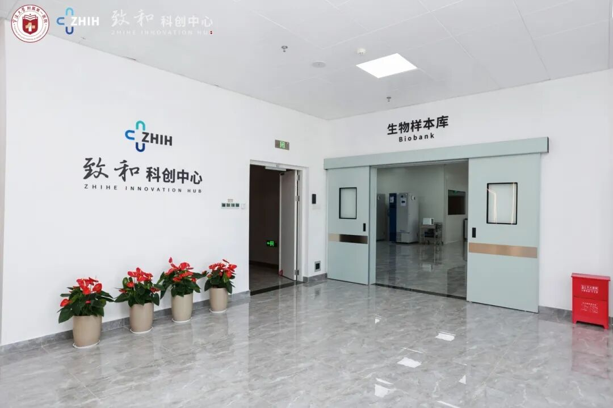
致和科创中心启用仪式
Opening ceremony of Zhihe Innovation Hub
致和科创中心正式启用，中心实验室平台建设迈入新阶段。
The Zhihe Innovation Hub opened, a new stage in building the Central Laboratory’s research platform.
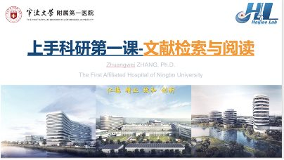
培训：上手科研第一课——文献检索与阅读
Training: literature search and reading
介绍文献检索、论文阅读与科研入门的基本方法。
An introduction to literature search, reading papers, and first steps in research.
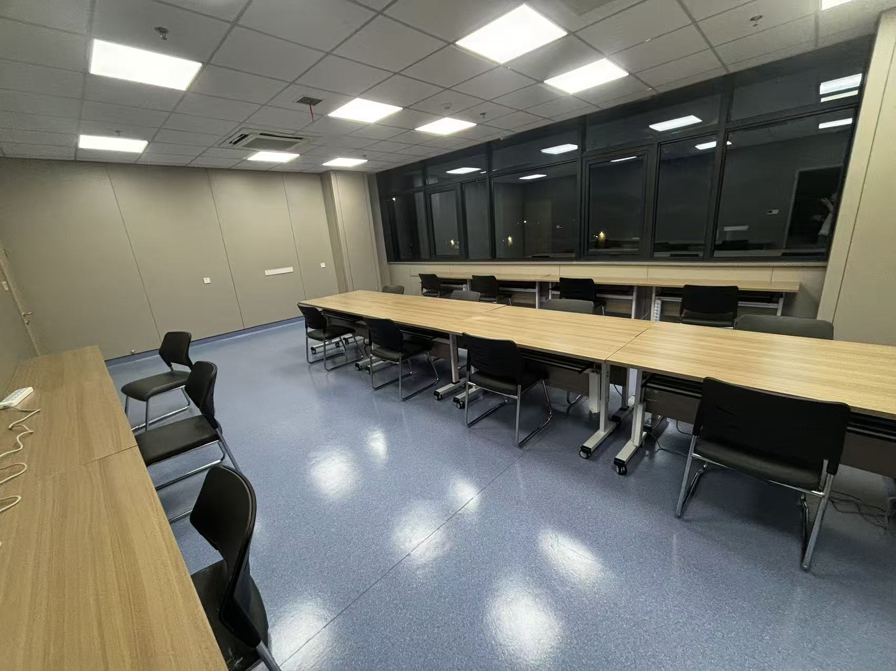
骨科研究生自习室启用
Orthopedic graduate study room opened
骨科研究生自习室投入使用，为日常学习、讨论与科研训练提供固定空间。
The orthopedic graduate study room opened, giving students a dedicated space for study, discussion, and research training.
202510月Oct
成员动态 · 3条Member updates · 3 items
2023级医学部本科生白圣磊加入课题组。Shenglei Bai, a 2023 undergraduate at the Health Science Center, joined the group.
浙江万里学院姜烁琦研究员加入合作团队。Shuoqi Jiang of Zhejiang Wanli University joined as a collaborator.
骨科青年医生李翔、杨成鹏，以及机械与力学学院研究生任天一加入课题组。Orthopedic surgeons Xiang Li and Chengpeng Yang, and Tianyi Ren from the School of Mechanical Engineering and Mechanics, joined the group.
第一次方桥组会
First Fangqiao group meeting
方桥院区课题组召开首次组会，明确研究任务与分工协作。
The Fangqiao group held its first meeting to set research tasks and divide responsibilities.
仪器预约平台实名认证与准入申请
Access to the instrument booking platform
推进仪器预约平台的实名认证与准入申请，规范共享仪器的使用流程。
Real-name verification and access applications for the instrument booking platform got under way, standardizing how shared equipment is used.
202511月Nov
成员动态 · 1条Member updates · 1 item
2025级医学部本科生陶昕昊加入课题组。Xinhao Tao, a 2025 undergraduate at the Health Science Center, joined the group.
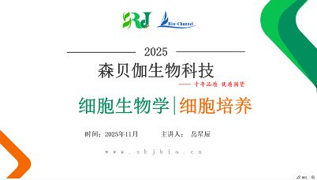
培训：细胞培养技术
Training: cell culture techniques
细胞培养技术培训，由森贝伽市场部提供支持。
Cell culture training, supported by Senbeijia’s marketing team.
202512月Dec
成员动态 · 1条Member updates · 1 item
药学部姚思恩药师加入合作团队。Sien Yao, a pharmacist in the Department of Pharmacy, joined as a collaborator.
202601月Jan
成员动态 · 2条Member updates · 2 items
口腔科专硕程俊格加入课题组。Junge Cheng, a professional master’s student in stomatology, joined the group.
骨科青年医生修浩楠加入合作团队。Orthopedic surgeon Haonan Xiu joined as a collaborator.
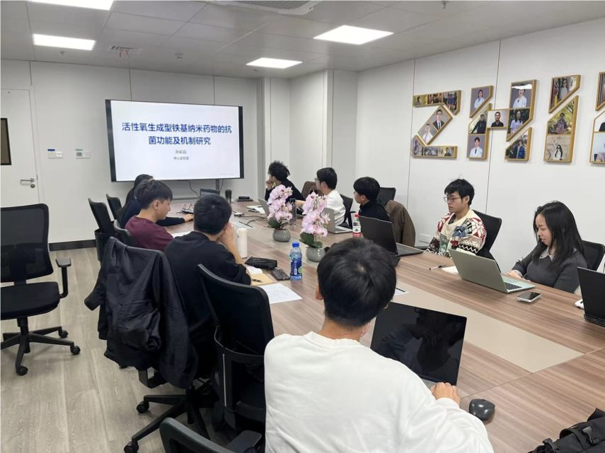
孙彩霞研究员汇报分享
Seminar by Caixia Sun
中心实验室孙彩霞研究员分享《活性氧生成型铁基纳米药物的抗菌功能及机制研究》。
Caixia Sun, Research Fellow at the Central Laboratory, presented her work on the antibacterial function and mechanisms of ROS-generating iron-based nanomedicines.
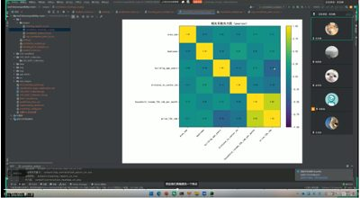
肖玉峰博士线上汇报分享
Online seminar by Dr. Yufeng Xiao
中国矿业大学肖玉峰博士线上分享《Python机器学习及对话式AI帮助学术写作》。
Dr. Yufeng Xiao of China University of Mining and Technology spoke online about using Python machine learning and conversational AI in academic writing.
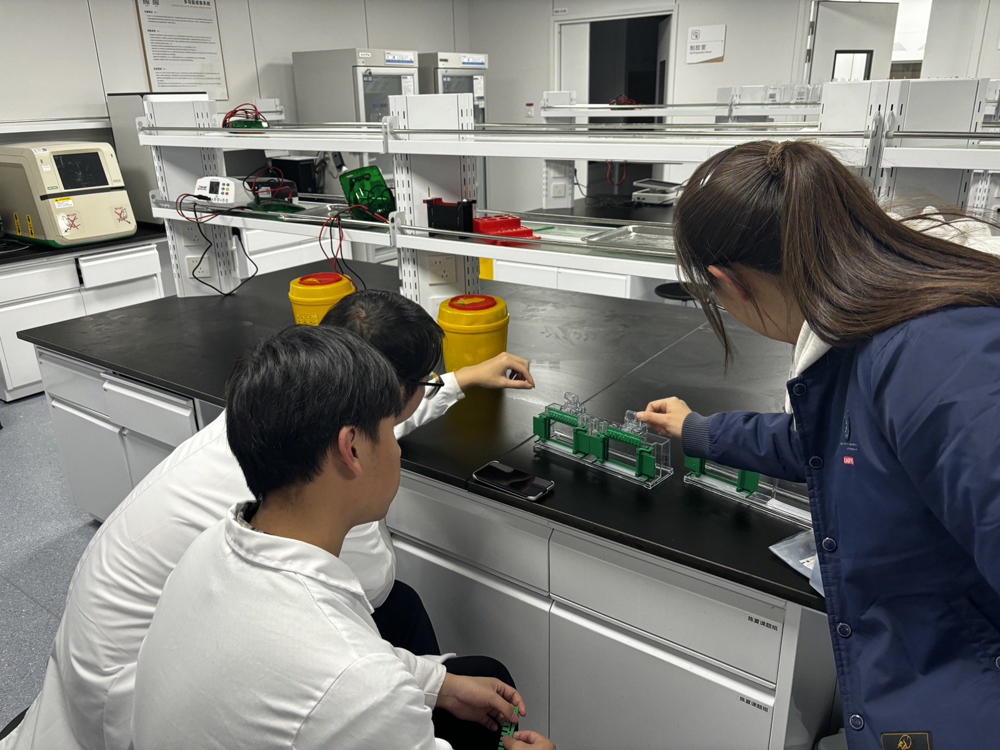
WB实验培训
Western blot training
围绕Western blot实验流程与关键操作开展实操培训。
Hands-on training on the Western blot workflow and its critical steps.
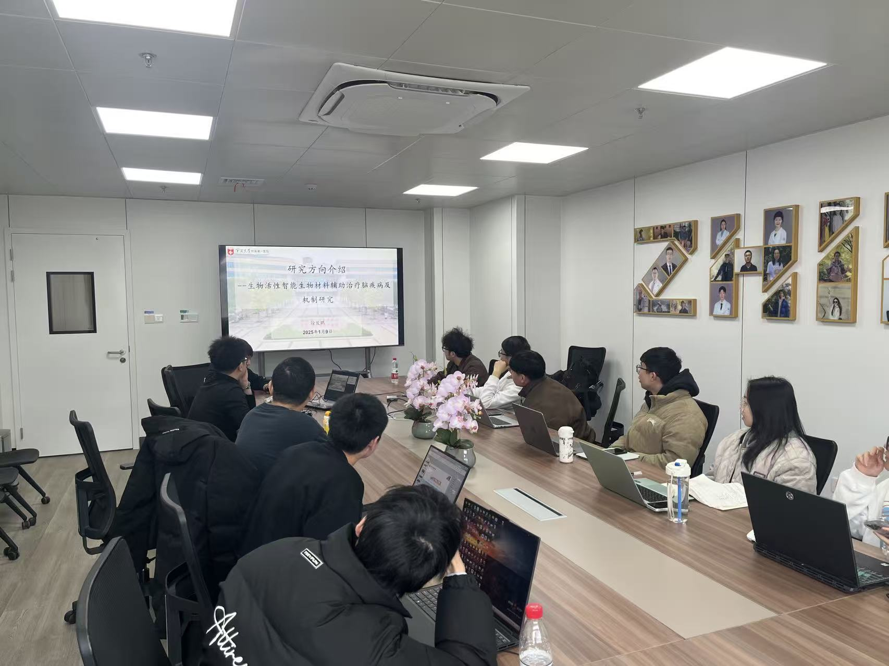
徐俊鹏研究员汇报分享
Seminar by Junpeng Xu
中心实验室徐俊鹏研究员分享《智能型生物活性水凝胶治疗脑疾病及机制研究》。
Junpeng Xu, Research Fellow at the Central Laboratory, presented his work on smart bioactive hydrogels for treating brain disease and the mechanisms involved.
Ronghuan Liu (Digital Industry Research Institute, Zhejiang Wanli University) presented luminescent quantum dots and their biological applications; Bihua Hu (Yuyao Innovation Institute) presented metal-macrocycle composites for selective electrocatalytic CO2 reduction and the underlying mechanisms.
202603月Mar
成员动态 · 1条Member updates · 1 item
核医学科研究生加入课题组相关方向。Graduate students from the Department of Nuclear Medicine joined related projects in the group.
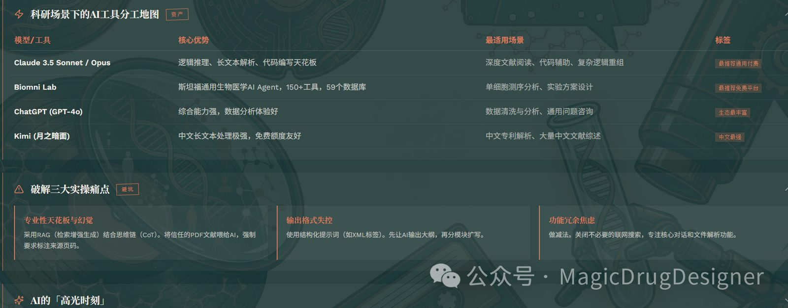
费翔老师线上分享AI科研工具
Online talk by Xiang Fei on AI research tools
费翔老师线上分享使用AI工具开展科研的经验。
Xiang Fei shared practical experience of using AI tools in research.
Cuiling Zeng (Central Laboratory) presented the molecular mechanisms and targeted therapy of osteosarcoma lung metastasis; Bei Zhang (Research Fellow) presented the construction and use of lysosome-targeting chimeras fused with insulin-like growth factor 2.
202604月Apr
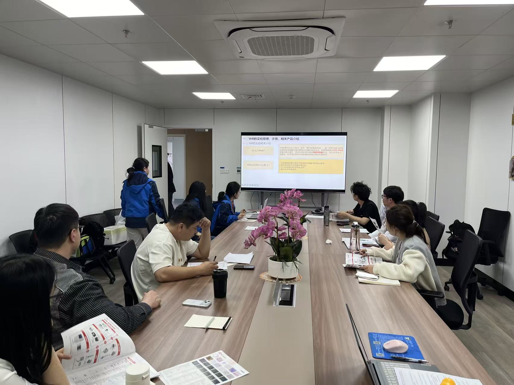
WB实验理论及实操全流程讲解
Western blot: theory and full workflow
赛维尔生物技术工程师开展《WB实验理论及实操全流程讲解》培训，系统讲解实验原理与完整操作流程。
A Servicebio technical engineer walked through the principles and the complete hands-on workflow of Western blotting.
专利知识讲座
Seminar on patents
介绍科研成果保护与专利申请的基础知识。
An introduction to protecting research results and the basics of applying for patents.
202605月May
成员动态 · 2条Member updates · 2 items
核医学科段劭加入课题组相关方向。Shao Duan from the Department of Nuclear Medicine joined related projects in the group.
李翔、杨成鹏、修浩楠、游伟、李蔚然等组员因短期内不在方桥实验室开展实验，暂不列入成员名单。Xiang Li, Chengpeng Yang, Haonan Xiu, Wei You, Weiran Li, and others were taken off the current member list, as they are not running experiments at Fangqiao Lab in the near term.
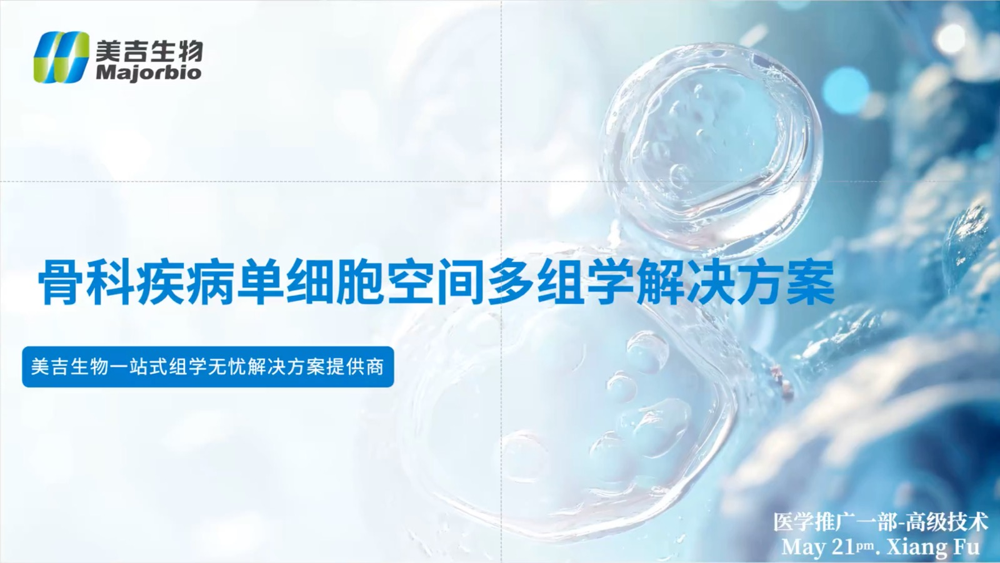
美吉生物多组学报告
Multi-omics seminar by Majorbio
美吉生物分享《单细胞及时空多组学在骨科领域应用》。
Majorbio presented applications of single-cell and spatiotemporal multi-omics in orthopedics.
202606月Jun
成员动态 · 1条Member updates · 1 item
宁波大学骨科学专业硕士研究生杨沅加入课题组。Yuan Yang, a master's student in Orthopedics at Ningbo University, joined the group.
东方理工大学数智生物创新研究院报告
Seminar from the Eastern Institute of Technology
东方理工大学数智生物创新研究院作学术报告。
The Institute for Digital-Intelligent Bioinnovation at the Eastern Institute of Technology gave an academic seminar.
Dr. Yifeng Shi (Spine Surgery) presented how PSMD14 stabilizes SLC7A11 to inhibit osteocyte ferroptosis and relieve glucocorticoid-induced osteoporosis.
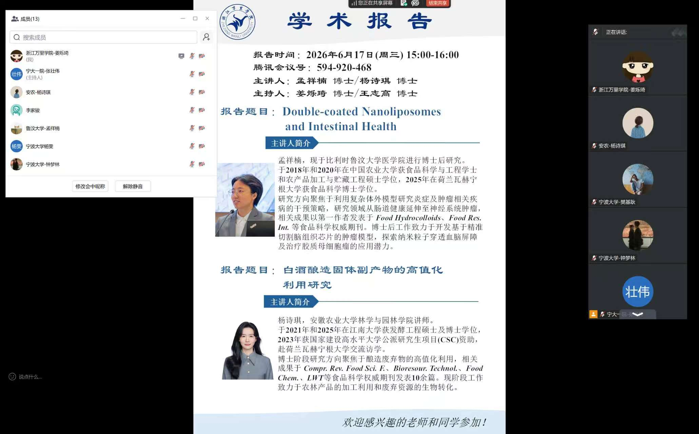
孟祥楠、杨诗琪报告与闭门会
Seminars by Xiangnan Meng and Shiqi Yang
比利时鲁汶大学医学院博士后孟祥楠分享《Double-coated Nanoliposomes and Intestinal Health》，安徽农业大学林学与园林学院讲师杨诗琪分享《白酒酿造固体副产物的高值化利用研究》；会后就推进精密组织切片合作举行了小型闭门会。
Xiangnan Meng, postdoctoral researcher at the KU Leuven Faculty of Medicine, presented “Double-coated Nanoliposomes and Intestinal Health”; Shiqi Yang, lecturer at Anhui Agricultural University, presented high-value uses of solid by-products from Baijiu brewing. A small closed-door meeting followed on advancing a precision tissue-slicing collaboration.
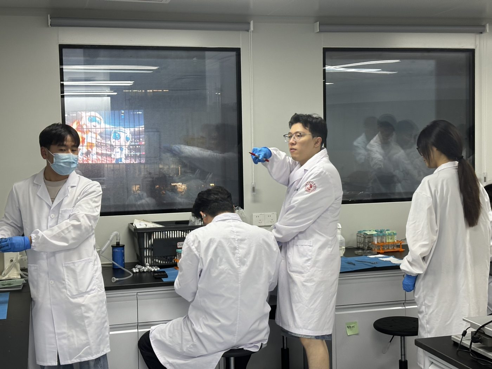
方桥实验室第一批动物实验完成
First Fangqiao Lab animal experiment completed
方桥实验室第一批动物实验顺利完成，由钟梦林执行。
Fangqiao Lab’s first animal experiment, carried out by Menglin Zhong, was completed.
202607月Jul
成员动态 · 4条Member updates · 4 items
温州医科大学2026级骨科学专硕霍亭洋加入课题组。Tingyang Huo, a 2026 M.Med. candidate in Orthopedics at Wenzhou Medical University, joined the group.
宁波大学2025级临床医学（拔尖人才创新班）陶昕昊、宁波大学2024级口腔医学本科生黄佳琦加入方桥实验室进行暑期实习。Xinhao Tao, a 2025 Clinical Medicine student in the Top-notch Innovative Talent Program at Ningbo University, and Jiaqi Huang, a 2024 undergraduate student in Stomatology at Ningbo University, joined Fangqiao Lab for a summer internship.
温州医科大学2026级骨科学学硕艾林加入课题组。Lin Ai, a 2026 academic master's student in Orthopedics at Wenzhou Medical University, joined the group.
宁波大学2026级临床医学学博林子皓加入课题组。Zihao Lin, a 2026 M.D.-Ph.D. candidate in Clinical Medicine at Ningbo University, joined the group.
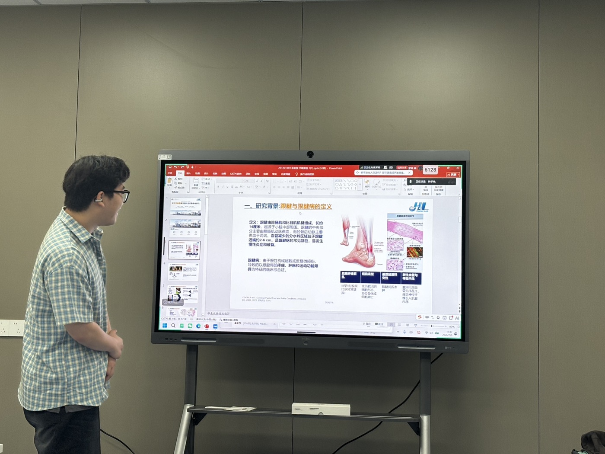
王轲瑜、李家骏课题组预开题
Pre-proposal presentations by Keyu Wang and Jiajun Li
温州医科大学研究生王轲瑜、李家骏在课题组内进行预开题汇报。
Wenzhou Medical University graduate students Keyu Wang and Jiajun Li gave pre-proposal presentations within the group.
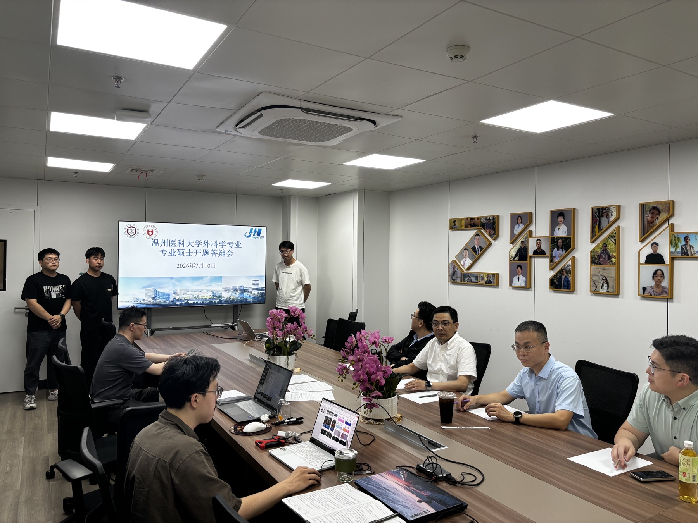
温医大外科学专硕开题答辩
Thesis proposal defense for WMU surgery master’s students
温州医科大学外科学专硕研究生举行开题答辩，这是方桥实验室建组以来的首批开题答辩。
Professional master’s students in surgery from Wenzhou Medical University defended their thesis proposals, the first proposal defenses since Fangqiao Lab was established.
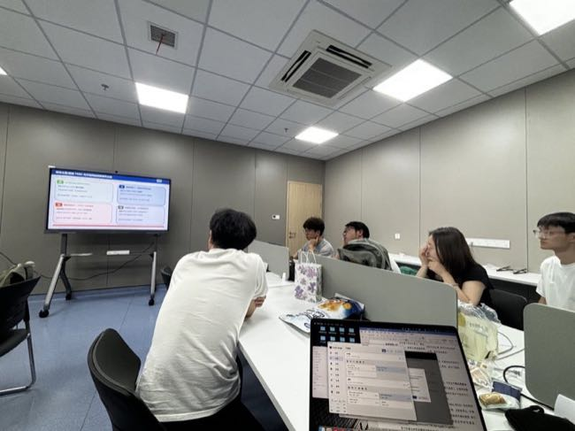
段鸿蓬老师分享三阴性乳腺癌化疗耐药研究
Seminar by Hongpeng Duan on TNBC chemoresistance
超声科段鸿蓬老师分享《三阴性乳腺癌化疗耐药微环境重塑：免疫逃逸机制解析与靶向递送体系研发》。
Hongpeng Duan (Department of Ultrasound) presented “Remodeling the chemoresistant microenvironment in triple-negative breast cancer: immune-escape mechanisms and targeted delivery systems.”
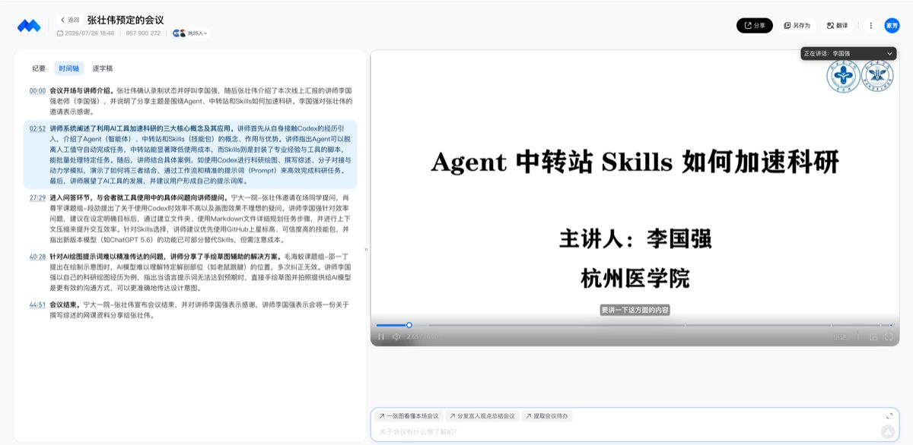
李国强老师线上分享Agent与Skills科研应用
Online talk by Guoqiang Li on agents and skills in research
杭州医学院李国强老师线上分享《Agent中转站：Skills如何加速科研》。
Guoqiang Li of Hangzhou Medical College gave an online talk, “Agent hubs: how skills accelerate research.”
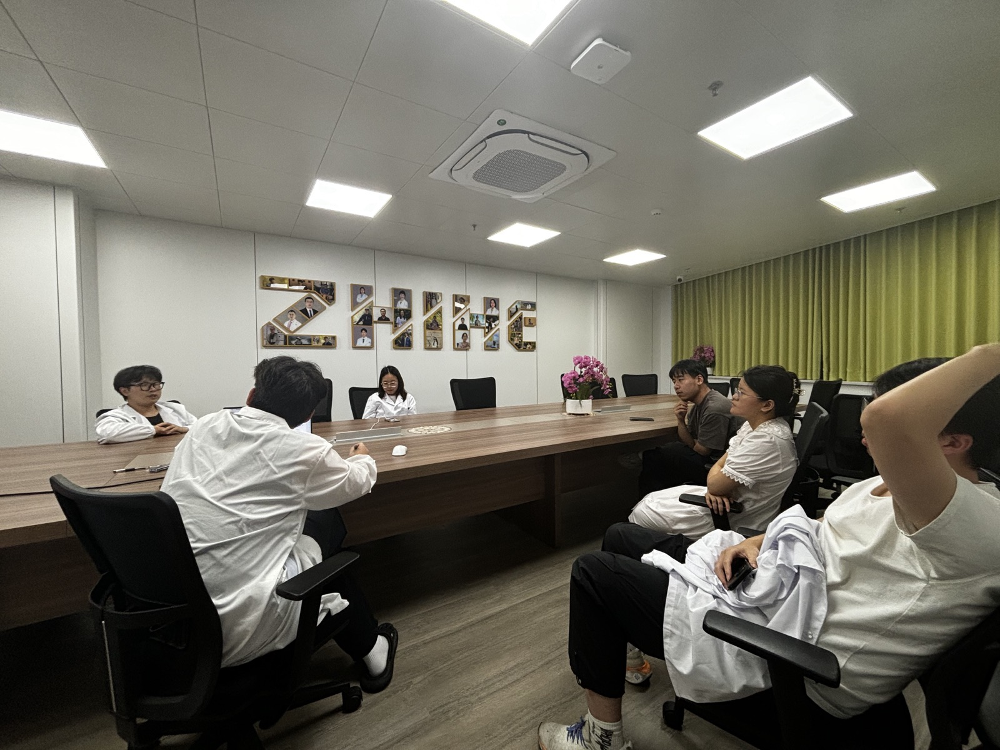
高年级研究生商讨带教与实验室规范
Senior graduate students discussed mentoring and lab standards
高年级研究生共同商讨低年级研究生的带教方式与实验室规范建设。
Senior graduate students discussed how to mentor junior students and establish shared laboratory standards.
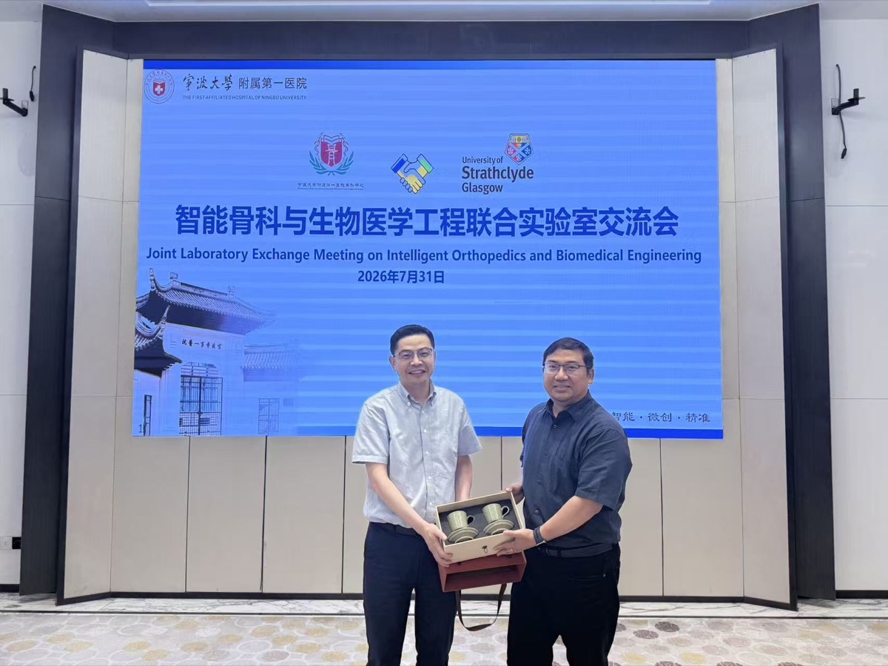
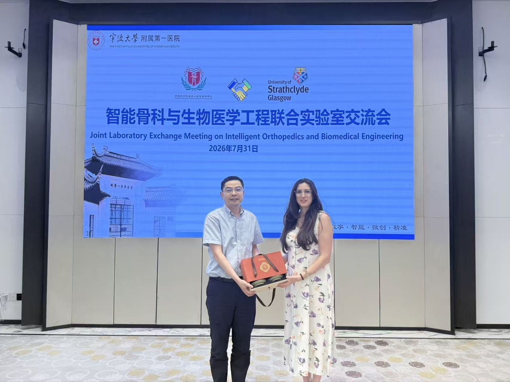
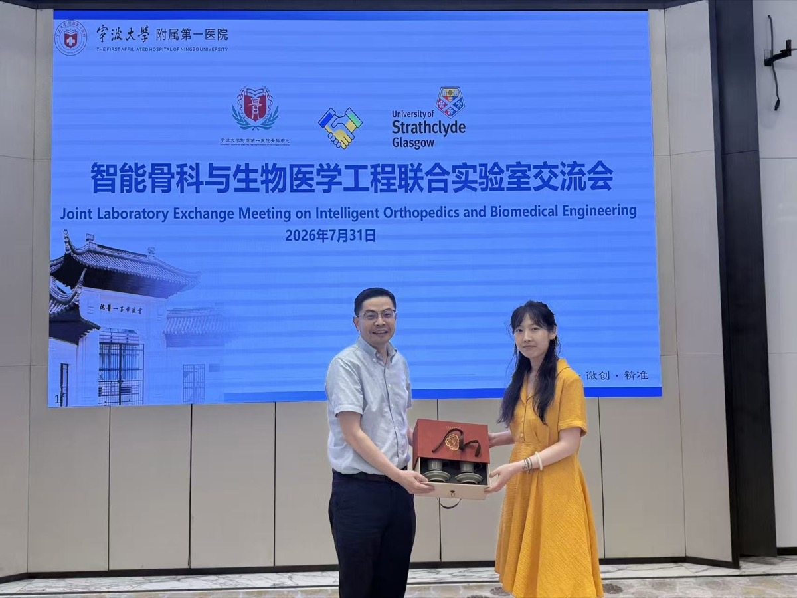
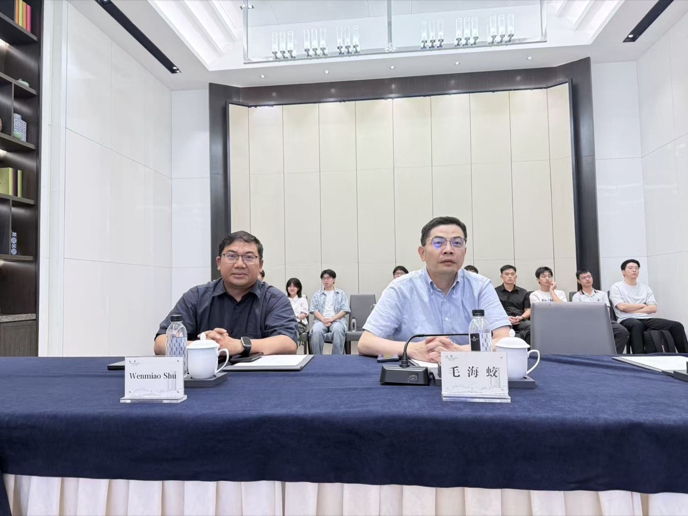
英国思克莱德大学专家来访，参加联合实验室交流会
University of Strathclyde delegation visits the joint lab
Prof. Will Shu (Head of Biomedical Engineering), Prof. Asimina Kazakidi (Director of Research), and researcher YiFei Wan from the University of Strathclyde visited and joined an exchange meeting of the Joint Laboratory for Intelligent Orthopedics and Biomedical Engineering.
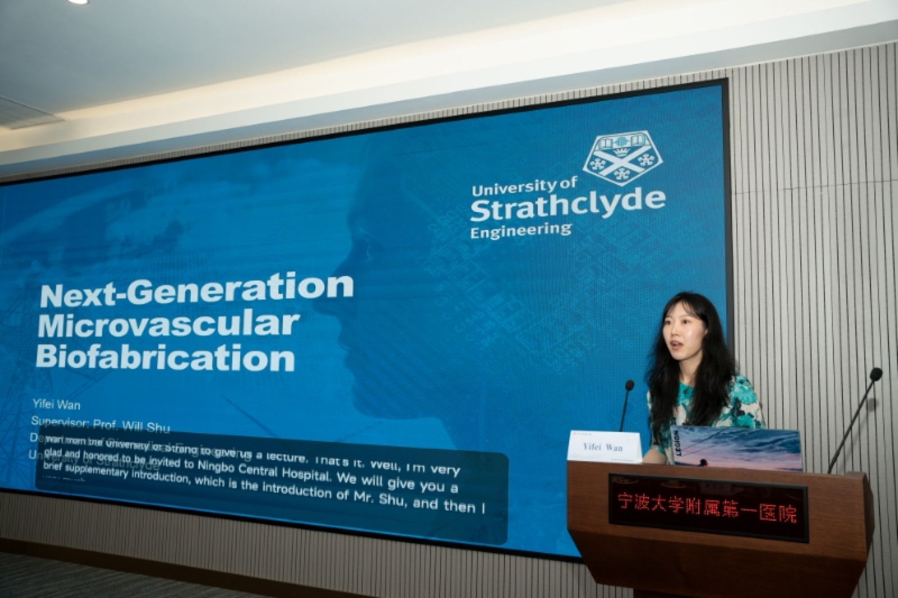
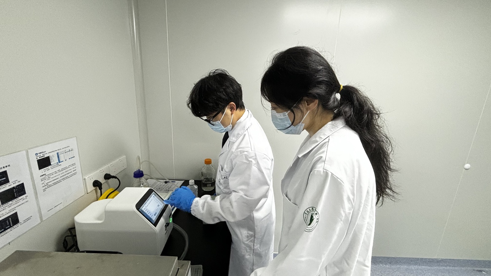
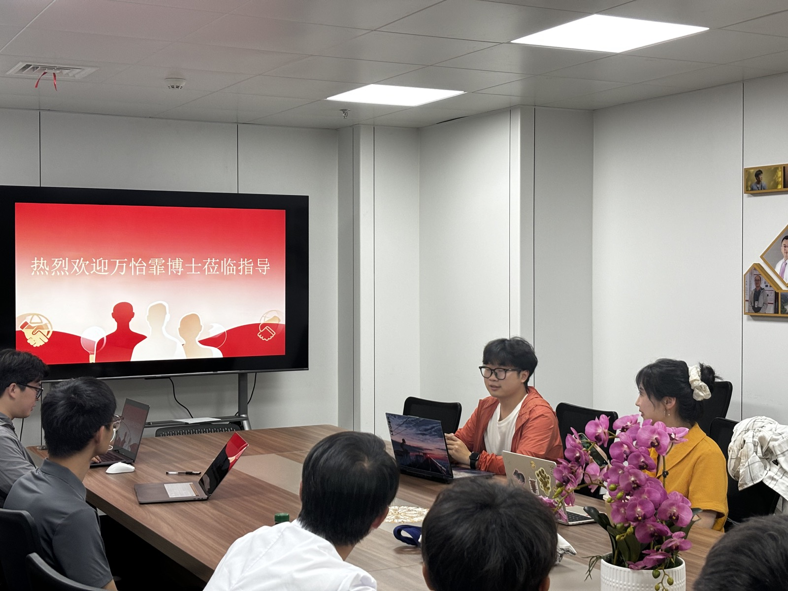
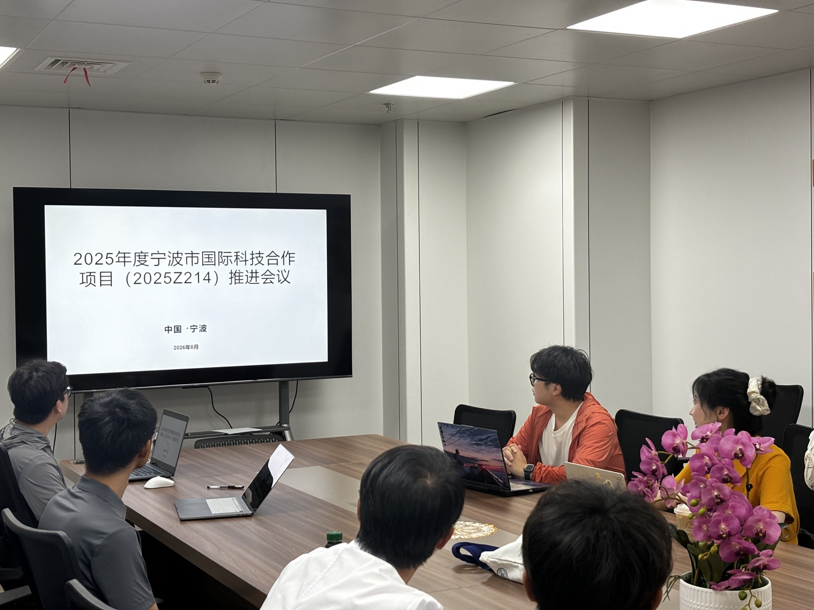
YiFei Wan研究员开展协同实验与指导
YiFei Wan starts two weeks of joint experiments
英国思克莱德大学生物医学工程系YiFei Wan研究员在方桥实验室开展为期两周的协同实验与指导。
YiFei Wan of Strathclyde’s Department of Biomedical Engineering began two weeks of joint experiments and hands-on mentoring at Fangqiao Lab.
202608月Aug
成员动态 · 1条Member updates · 1 item
宁波大学附属第一医院创伤骨科罗李博士加入课题组。Dr. Li Luo from the Department of Orthopedic Trauma at The First Affiliated Hospital of Ningbo University joined the research group.
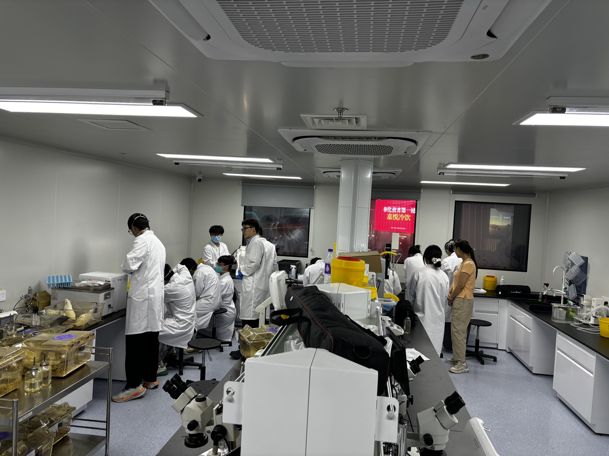
方桥实验室第二批动物实验完成
Second Fangqiao Lab animal experiment completed
方桥实验室第二批动物实验顺利完成，由邵一丁执行。
Fangqiao Lab’s second animal experiment, carried out by Yiding Shao, was completed.
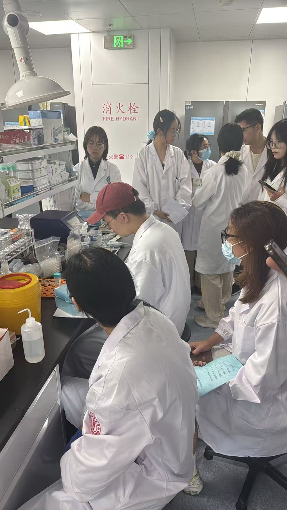
郦殷浙开展分子克隆与蛋白纯化培训
Molecular cloning and protein purification training by Yinzhe Li
邀请浙江工业大学生物工程学院研究生郦殷浙，讲授引物设计、质粒构建与转化及蛋白纯化，并进行实操培训。
Yinzhe Li, a graduate student at the College of Biotechnology and Bioengineering, Zhejiang University of Technology, taught primer design, plasmid construction and transformation, and protein purification, with hands-on practice.
AI辅助蛋白设计与PET示踪剂研讨
Roundtable on AI-assisted protein design and PET tracers
Dr. Lin Wang from the Suzhou Institute of Systems Medicine and Dr. Zhuojian Lu from Zhujiang Hospital, Southern Medical University, joined a roundtable on molecular imaging probes, AI-assisted molecular design, current challenges, potential solutions, and future directions.
美吉生物文献解读与质控培训
Literature review and QC training by Majorbio
美吉生物开展肩袖损伤单细胞空间组学文献解读与实验质控培训。
Majorbio delivered literature interpretation and experimental quality-control training on single-cell spatial omics for rotator cuff injury.
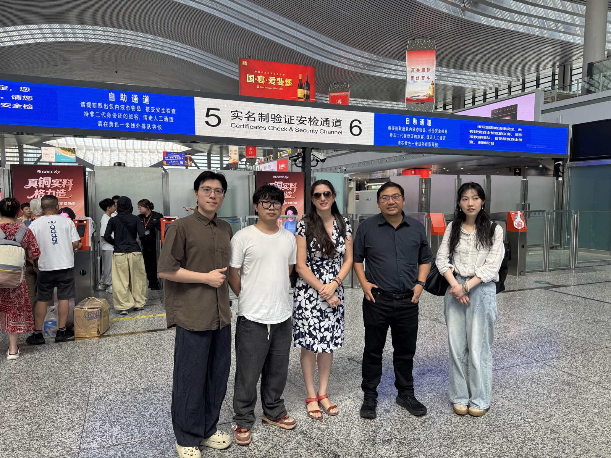
YiFei Wan研究员结束联合实验返英
YiFei Wan concludes joint experiments and returns to the UK
YiFei Wan研究员结束在方桥实验室为期两周的联合实验，返回英国思克莱德大学。
Researcher YiFei Wan concluded a two-week joint experiment at Fangqiao Lab and returned to the University of Strathclyde in the UK.
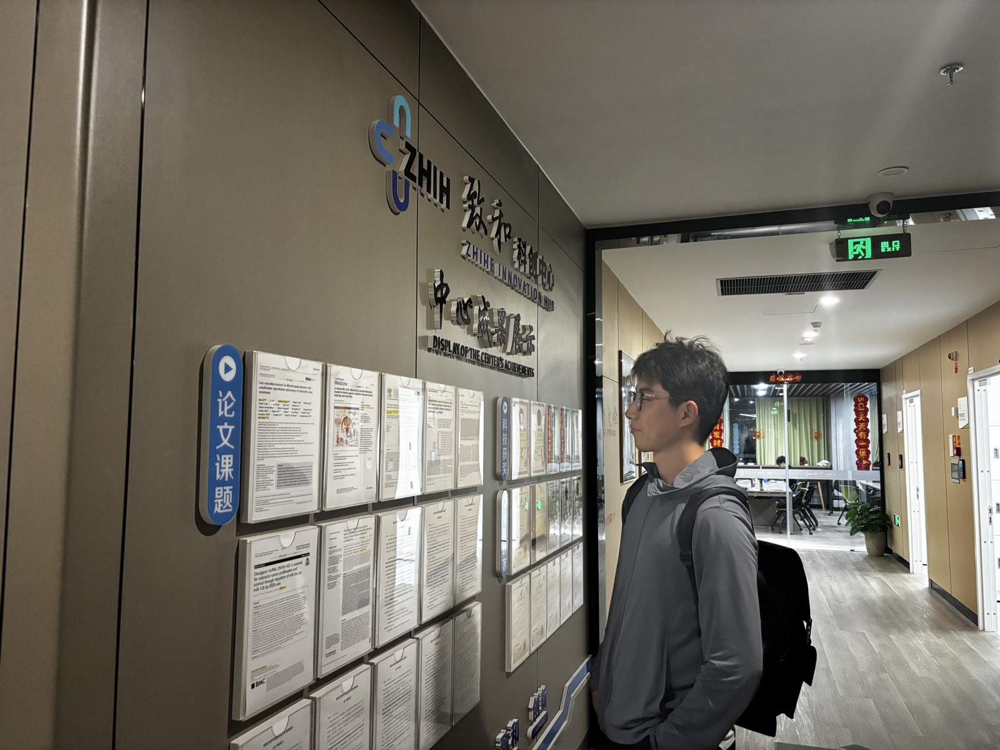
吴雨伦博士开展实验指导
Experimental guidance by Dr. Yulun Wu
南京大学化学学院吴雨伦博士在方桥实验室指导MOF合成与纳米酶机理分析。
Dr. Yulun Wu from the School of Chemistry, Nanjing University, provided guidance at Fangqiao Lab on MOF synthesis and nanozyme mechanism analysis.
202609月Sep
吴雨伦博士汇报分享
Seminar by Dr. Yulun Wu
南京大学化学学院吴雨伦博士分享《纳米颗粒-水凝胶体系测试与数据分析》。
Dr. Yulun Wu from the School of Chemistry, Nanjing University, presented “Nanoparticle-Hydrogel System Testing and Data Analysis.”
樊基耿讲解ChatGPT API与模型使用
Jigeng Fan on the ChatGPT API and model use
樊基耿讲解ChatGPT API key的更换方法及各模型的使用。
Jigeng Fan explained how to switch ChatGPT API keys and how to use the different models.
第42个教师节
42nd Teachers' Day
课题组成员共同庆祝第42个教师节。
Group members celebrated China’s 42nd Teachers’ Day together.
Zhuangwei Zhang and Jigeng Fan walked through the key figures of a proteomics report, demonstrated how to make volcano plots, heatmaps, and GO/KEGG enrichment plots, and recommended tools for data analysis and visualization.
张壮伟受聘研究生校外导师
Zhuangwei Zhang appointed external graduate supervisor
张壮伟受聘为浙江海洋大学食品与药学学院药学专业研究生校外导师。
Zhuangwei Zhang was appointed external graduate supervisor for the Pharmacy program at the School of Food Science and Pharmacy, Zhejiang Ocean University.
Prof. Yang Zhou of the Cixi Institute of Biomedical Engineering (Ningbo Institute of Materials Technology and Engineering, Chinese Academy of Sciences) visited Fangqiao Lab at our invitation for academic discussions and talks on research collaboration.
Haijiao Lab团建活动
Haijiao Lab team-building outing
Haijiao Lab的导师、博士生、学术型与专业型硕士生及本科生一同前往杭州马术中心团建。
Haijiao Lab mentors, doctoral students, master’s students, and undergraduates spent a team-building day at the Hangzhou Equestrian Center.
联系方式
Contact
合作与交流
Collaboration and contact
欢迎就科研合作与我们联系，也欢迎本科生前来实习交流。
We welcome research collaborations. Undergraduates interested in an internship are
encouraged to get in touch.